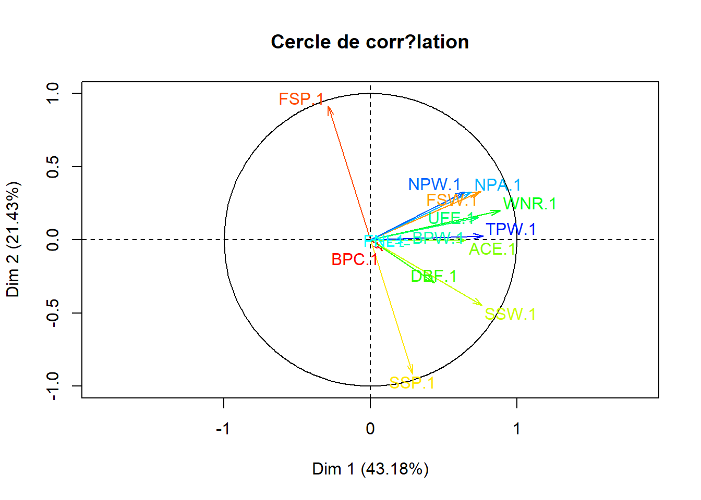
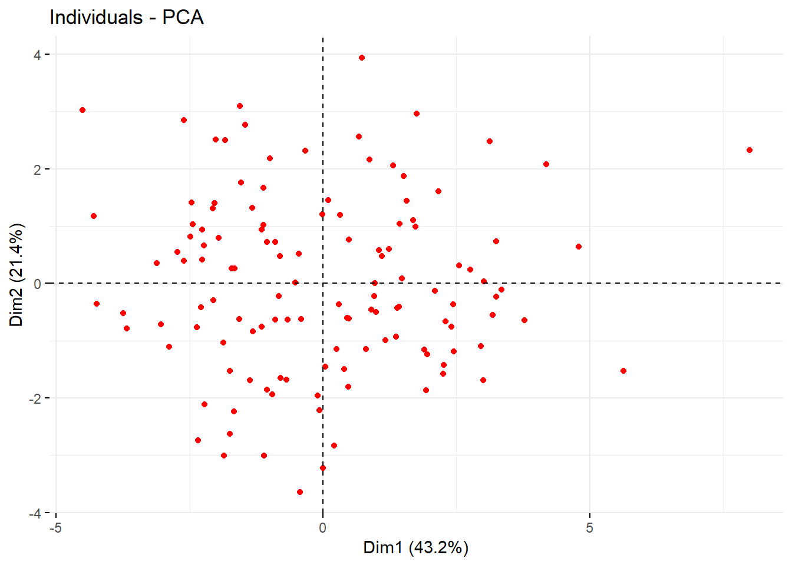
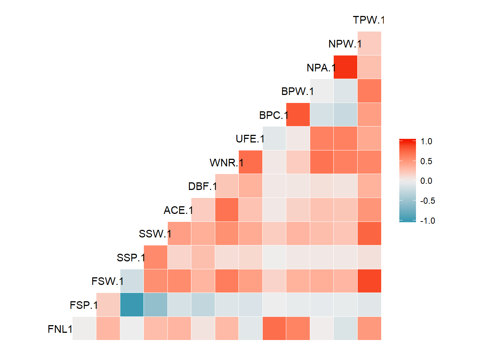

PROJET ACP
Statistiques générales
Column
ACP
t<-read.csv(file = "C:/Users/Yessine/Documents/YessineBessrour95.github.io/AusOpen.csv",sep = ",")
t1<-t[,-(which(colnames(t)=="ST1.1"):which(colnames(t)=="ST5.1"))]
t2<-t1[,-(which(colnames(t1)=="ST1.2"):which(colnames(t1)=="ST5.2"))]
t2[is.na(t2)]<-0
t3<-t2[,c(5,7,8,9,10,11,12,13,14,15,16,17,18,19)]
acp1<-PCA(t3,ncp = 5,quanti.sup = c(10,11,1),graph = FALSE)
plot.PCA(x = acp1,axes = c(1,2),choix = "var",title = "Cercle de corrélation",col.hab = rainbow(20),col.quanti.sup = "black")
fviz_screeplot(acp1)
fviz_pca_ind(X = acp1,geom = "point",col.ind = "red")
Column
Corrélations
ggcorr(data = t3)
attach(t3)
plot(x =TPW.1,y = FNL1,xlab = "Totale des points",ylab = "Nombre de manches gagnées")plot(x =WNR.1,y = UFE.1,xlab = "Winners",ylab = "Fautes directes")Comparaison
Rafael Nadal
tN<-t2[which(t2$Player1=="Rafael Nadal"),]
tN1<-tN[,c(5,7,8,9,10,11,12,13,14,15,16,17,18,19)]
rownames(tN1)<-c("Tour1","Tour2","Tour3","Tour4","1/4final","1/2final","final")
d3heatmap(tN1,scale = "column",colors = "Blues",Rowv = FALSE,Colv = FALSE)Nad<-colMeans(tN1[,2:14])
Nad## FSP.1 FSW.1 SSP.1 SSW.1 ACE.1 DBF.1 WNR.1
## 70.000000 45.857143 30.000000 15.000000 4.714286 2.000000 28.285714
## UFE.1 BPC.1 BPW.1 NPA.1 NPW.1 TPW.1
## 24.857143 3.857143 8.857143 10.714286 15.000000 99.571429Roger Federer
tF<-t2[which(t2$Player2=="Roger Federer"),]
tF1<-tF[,c(6,20,21,22,23,24,25,26,27,28,29,30,31,32)]
rownames(tF1)<-c("Tour1","Tour2","Tour3","Tour4","1/4final","1/2final")
d3heatmap(tF1,scale = "column",colors = "Reds",Rowv = FALSE,Colv = FALSE)Fed<-colMeans(tF1[,2:14])
Fed## FSP.2 FSW.2 SSP.2 SSW.2 ACE.2 DBF.2
## 63.833333 45.333333 36.166667 19.166667 8.833333 1.333333
## WNR.2 UFE.2 BPC.2 BPW.2 NPA.2 NPW.2
## 41.333333 30.500000 3.833333 11.333333 26.333333 36.666667
## TPW.2
## 105.000000